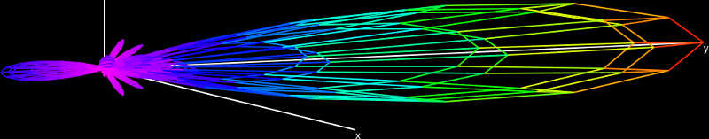
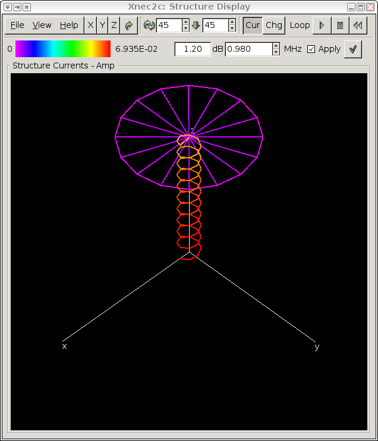
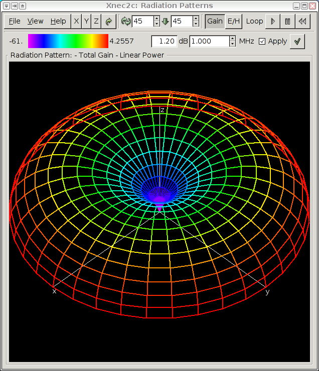
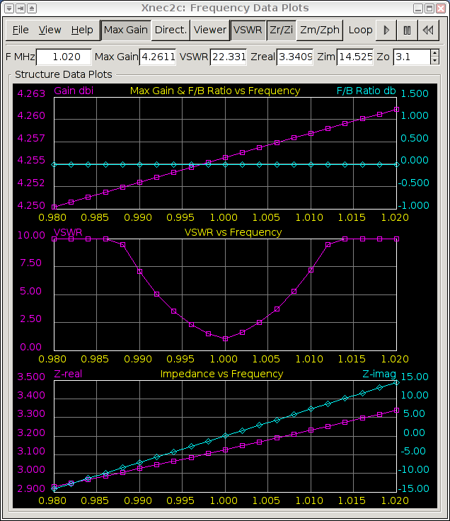
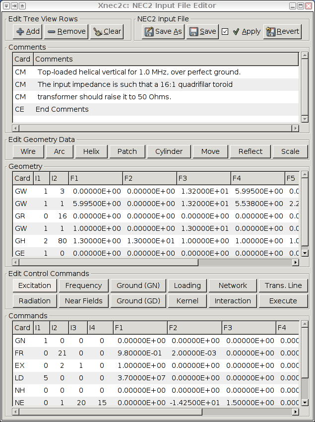
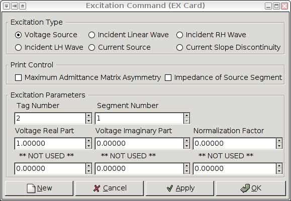

Xnec2c: Graphical NEC2 Antenna Simulation
Xnec2c is a high-performance multi-threaded electromagnetic simulation
package to model antenna near- and far-field radiation patterns
for Linux and UNIX operating systems. The original FORTRAN version of
NEC2 was ported to C by Neoklis Kyriazis, 5B4AZ and released as nec2c.
Later he wrote xnec2c, a graphical interface for ease of use with
many more features:
Xnec2c Quick Start Guide
Compilation
- git clone https://github.com/KJ7LNW/xnec2c.git
- cd xnec2c
- ./autogen.sh
- ./configure
- make && make install
- make desktop-install # Optional: for icons and file association.
- xnec2c
Compilation Notes
If you prefer to download .tar.gz files they are available on our
releases page.
-
You will need the Gnome development libraries and build tools installed for your distribution:
- Debian/Ubuntu: apt-get install build-essential gnome-devel libgtk-3-dev gettext autopoint
- CentOS: yum install gcc make automake autoconf gtk3-devel gettext-devel libtool
-
If you have trouble running "./autogen.sh" then try "autoreconf -v -i -W all" instead; its
output may be more informative and indicate the actual issue.
-
If you have trouble building on any OS then please open an issue on the github issues page so we can make xnec2c build on as many systems as possible.
Getting Started
- Open a simple antenna like examples/2m_yagi.nec because it will render quickly.
- In the main window, select View->Radiation Pattern and View->Frequency Plots
- In the Freqplots window, select "Max Gain" and "VSWR" (or whichever you'd like to see).
- Click the triangle "Play" button on the freqplots window to render the graph.
- Click anywhere in the plot window to select a frequency (green line)
- Drag the radiation pattern around and have a look!
Performance Tips
- Launch xnec2c with as many jobs as you have CPUs; for example: xnec2c -j8
- Configure accelerated LAPACK libraries. See File->Mathlib Libraries->Mathlib Help
Contribute to Xnec2c
If you wish
to contribute to the xnec2c project then we would welcome your
support and pull-requests at the
official xnec2c GitHub repository
User's Manual
- Introduction
- Features
- Compilation and Installation
- Operation
- Input File Considerations
- Output File Considerations
- Version History
- Limitations
- Bugs and Inadequacies
- Acknowledgment
1.
Introduction:
Xnec2c is a GTK3-based Graphical version of nec2c, my
translation to the C language of NEC2, the FORTRAN Numerical
Electromagnetics Code commonly used for antenna simulation and
analysis. The original nec2c is a non-interactive command-line
application that reads standard NEC2 input files and produces an
output file with data requested by "commands" in the input file. In
contrast xnec2c is a GUI interactive application that (in its
current form) reads NEC2 input files but presents output data in
graphical form, e.g. as wire frame drawings of the radiation
pattern or near E/H field, graphs of maximum gain, input impedance,
VSWR etc against frequency and simple rendering of the antenna
structure, including color code representation of currents or
charge densities. These results are only calculated and drawn on
user demand via menu items or buttons, e.g. xnec2c is interactive
and does not execute NEC2 "commands" in batch style as the original
does. Printing of results to an output file has been removed
starting from version 1.0, since xnec2c works in a way that does
not allow printing compatible with the NEC2 format. If printing to
file is needed then it is better to use the original NEC2 program,
to avoid bugs that may still be lurking in the C translation.
Xnec2c now has a built-in editor for NEC2 input files which can
be used to edit geometry or command "card" data. This basic editor
displays comment, geometry and command cards in tree views where
individual rows, each representing a card, can have their cells
edited directly for "raw" entry of data. More useful are pop-up
"editor" windows that open when appropriate buttons are clicked or
when a selected row is right-clicked with the mouse. These editors
allow easier, more convenient entry and editing of individual rows,
with no need for detailed knowledge of "card" formats. When editing
is completed, the contents of the nec2 editor can be saved in a
NEC2-compatible input file which can then be re-loaded by xnec2c
for execution.
2. Features:
-
Multi-threading
operation on SMP machines:
Since version 1.0, xnec2c can run multi-threaded (by forking) on
SMP machines, when executing a frequency loop. Multi-threading is
enabled by using the -j<n> option, where n is the number of
processors in a SMP machine. xnec2c will spawn n child processes,
to which it will delegate calculation of frequency-dependent data
for each frequency step. Thus data related to n frequency steps
will be calculated concurrently and passed on the the parent
process by pipes, to be further processed for graphical display.
Child processes are spawned before GTK is initialized and started
so that only the parent process is tied to the GUI interface. Thus
there are n+1 processes running when the -j option is used and
execution is faster by slightly less than n times. Please
note that its pointless and counter-productive to specify a
value of n greater than the number of steps in the frequency
loop.
-
On-demand
Calculation:
Since xnec2c collects data to be displayed in buffers directly from
the functions that produce them, there is no need to produce and
parse an output file and no need to re-run the program when certain
input data (currently the frequency) is changed or when different
output data (gain, near-fields, input impedance etc) is required.
The frequency can be changed either from spin buttons in the
Main and Radiation Pattern windows or by clicking on
the Frequency Data window's graph
drawing area. The frequency corresponding to the pointer position
will then be used to re-calculate whatever data is on display.
Built-in NEC2 input file
editor:
Xnec2c has a built-in editor for NEC2 input files. Data in NEC2
"cards" can be entered or edited either directly in the main editor
window (tree view) or in more convenient dedicated editors for each
type of card. Edited data can be saved to a NEC2 input file and
reloaded for execution so that the edit-execute-display cycle is
quicker and more convenient.
Accelerated Linear Algebra Support
Support for accelerated libraries was added in version 4.3.
Accelerated math libraries such as ATLAS, OpenBLAS and Intel MKL
can speed up xnec2c EM simulations if available on your platform.
Library detection details are available in the terminal. See
File->Math Libraries->Help for more information. Accelerated operation
is optional, it will fall back to the original NEC2 algorithms if
necessary. Accelerated library support has been tested on Ubuntu
, Debian, CentOS/RHEL, and VOID Linux.
Generally speaking, if you can install the requisite libraries,
it will be detected. If libraries are not detected on your OS then
please open a bug report.
-
Interactive Operation:
Xnec2c is interactive in its operation, e.g. when started it just
shows its Main window in a "blank" state, indicating that no valid
input data has been read in yet. The NEC2-type input file can be
specified at start-up in the command line optionally with the -i
option or it can be opened from the file selection dialog that
appears via the File->Open menu of the Main window. Once a valid input file is opened,
all the normal widgets in the Main window
appear so as to allow proper operation. The NEC2 "commands" in the
input file are read in but not executed, until a request is issued
by the user via buttons or menus in the appropriate windows.
- User Interface:
In its current form, xnec2c has three windows for the graphical
display of output data: When started without an input file
specified optionally by the -i <input-file> option, the
Main window opens with most of the button
and menu widgets hidden. When a valid input file is opened, all the
hidden widgets are shown and the structure is drawn in the Main window's drawing area widget. From the
View menu, the Radiation
Pattern and Frequency Related
data display windows can be opened, to draw either the Gain
pattern or the Near E/H fields or Frequency-related Data like Input
Impedance, VSWR, Max gain, F/B Ratio, Gain in the Viewer's
direction etc. Both the Main window and
the Radiation Pattern window have
buttons to select fixed viewing angles of the structure or the
radiation pattern, as well as spin buttons to input specific
viewing angles.
-
Color Coding:
Xnec2c uses color coding to visualize the Current or Charge
distribution in the Structure's segments or patches as well as the
Gain pattern or the Near E/H field pattern. Color coding is also
used to clarify the Graphs of Frequency-related data. A color code
strip is shown in the Main and Radiation Pattern windows.
3. Compilation and
Installation:
Xnec2c is known to build on many different platforms including Linux
and by using FreeBSD FRESH ports.
If you have trouble building on your OS then please open a bug report.
To compile the package, it may be preferable to first run the
included "autogen.sh" script in the package's top directory, to
produce a fresh build environment. Then the "configure" script can
be run with optional parameters to override the default settings
and compiler flags, e.g: ./configure --prefix=/usr CFLAGS="-g -O2"
will override the default /usr/local installation prefix and the
"-Wall -O2" compiler flags.
Running "make" in the package's top directory should produce the
executable binary in src/. Running "make install" will install the
binary into /usr/local/bin by default or under the specified
prefix. It will also install the default configuration file into
the user's home directory. This will have to be edited by the user
as required. There is also this hypertext documentation file which
you can copy to a location of your choice.
No configuration files are needed and the sample input files
that were used during development are in the xnec2c/examples
directory. Please also read the xnec2c/doc/nec2c.txt file
that describes the nec2c application that is used as the basis for
xnec2c.
4. Operation:
Command Line Options:
Usage: xnec2c [options] [<input-file-name>]
-i|--input <input-file-name>
-j|--jobs <number of processors in SMP machine> (-j0 disables forking)
-b|--batch: enable batch mode, exit after the frequency loop runs
--optimize: Activate the optimizer immediately.
-P|--no-pthreads: disable pthreads and use the GTK loop for debugging
-h|--help: print usage information and exit
-V|--version: print xnec2c version number and exit
-v|--verbose: increase verbosity, can be specified multiple times
-d|--debug: enable debug output (-dd includes backtraces)
-d|--quiet: suppress debug/verbose output
The following arguments write to an output file after the frequency loop
completes. These are useful to combine with --batch; If you wish to specify
filenames to write without --batch mode then enable the File->Optimizer
Settings or the files you specify on the command line will not be written.
--write-csv <filename>
--write-s1p <filename>
--write-s2p-max-gain <filename>
--write-s2p-viewer-gain <filename>
Command Line Notes:
<input-file-name>: Specify a NEC2 input file to
be opened at start-up. If the -i option is omitted, xnec2c will
take the last argument to be the input file path name, but will
only open it if it has the .nec extension.
<number of child processes to spawn>: Since
version 1.0 xnec2c can run multi-threaded on SMP machines. This
option specifies the number of child processes to spawn by forking,
so that the total number of processes running will be n+1. n should
be equal to the number of processors in a SMP machine. Please
note that its pointless and counter-productive to specify a
value of n greater than the number of steps in the frequency
loop, or greater than the number of logical CPUs on your system.
tarting in version 4.3, xnec2c always forks at least one job
for better UI responsiveness. If you wish to disable forking for
debug or testing then specify -j0.
The Main
Window:

Note: As of version 3.7-beta, many buttons and menu items
have been given keyboard accelerators and these are denoted in
brackets, after the mention of these widgets in the manual's
text.
When starting xnec2c from a terminal or from a file manager (by
OLE), the -i option can be used to specify a NEC2 input file:
xnec2c -i ~/nec2/turnstile.nec. Otherwise an input file can
be opened from the Main window's File->Open (o) menu
item. If the input file is valid, xnec2c will render the structure
specified in the Geometry section of the file in the Main window's
drawing area. The background color is black and the structure is
rendered in blue. The excitation points (segments) are rendered in
red, the x, y, z axis in white, loaded segments in yellow,
transmission lines in cyan and two-port networks in magenta. These
colors are hard-coded in the source code and at this stage of
development there is no option to change them.
Once an input file is opened, the structure display can be
rotated around the Z axis and tilted about a horizontal axis
through the origin. This can be done either by pressing button #1
and dragging the structure with the mouse pointer, clicking the
X (x), Y (y), Z (z) or the right-arrow Default (d)
view button (45 deg rotation and tilt). The actual value of
rotation and tilt is shown in two spin button widgets which can
also be used to change the viewing angle.
Starting with version 2.1, the structure display can be zoomed
in or out by using the mouse wheel or the Zoom controls: Zoom
% spin wheel and the + (Ctrl Key +), - (Ctrl Key -) and 1
(Ctrl 1) buttons and it can also be moved around by dragging
with the right mouse button #2.
The current distribution or charge density in the structure can
be displayed by clicking the Currents (i) or Charges
(v) toggle buttons at the top right of the Main window. The
distribution of current or charges is rendered by a color code, red
for the maximum value and magenta for zero. The Frequency Loop
control buttons can be used to Start, Pause or Reset the loop.
There is a Color Code bar at the left of the second row of
widgets in the Main window, indicating the color coding and the
maximum value of the displayed quantity (at its right).
The title in the border of the drawing area widget shows the
user-selected function of the display, while the text entry widget
at the right of the color code bar shows antenna gain in the Viewer
direction, e.g. perpendicular to the Screen. To the right of this
the Frequency Spin Button shows the current frequency in MHz
for which the current/charge distribution and Viewer gain are
calculated and displayed. If the Redo Check box is active,
each time the frequency is changed in the spin button, all relevant
data on display will be recalculated. If not, clicking the Redo
button will initiate recalculation.
Printing of results to an output file has been removed starting
from version 1.0, since xnec2c works in a way that does not allow
printing compatible with the NEC2 format. If printing to file is
needed then it is better to use the original NEC2 program, to avoid
bugs that may still be lurking in the C translation. Otherwise, it
is possible to save the structure drawing to a PNG file by using
the Save (s) or Save As (Ctrl s) items in the File
menu.
Starting with version 2.1, xnec2c can save the structure display
as a data file for the "gnuplot" plotting program. This is done by
using the File->Save As gnuplot menu item, to open a file
chooser dialog. If only the stem of the file name is given, xnec2c
will automatically add the .gplot extension. Plotting in gnuplot is
done with the "splot <filename> with lines" command, although
the plot can be enhanced with some of the style etc commands
available in gnuplot.
The View menu allows opening of other output data display
windows and selection of various options:
The Radiation Pattern (r) menu item opens the Radiation Pattern window so that the Gain
pattern or the Near E/H fields can be calculated and displayed.
The Frequency Data (f) item opens the Frequency Data Plots window which allows the
plotting of various frequency-related data against the frequency
range specified in the FR command. It also allows quick selection
of the current frequency and recalculation of data by clicking on
the plots drawing area.
The Polarization sub menu allows the selection of different
polarizations for which many data items are calculated (e.g. gain,
F/B ratio etc). The selection is global, e.g. it effects all
relevant data that are drawn or displayed in other windows.
The Common Projection item couples the projection (viewing
angle) parameters of the Structure display in the Main window and
the Gain or E/H field display in the Radiation pattern window so that both move
in step. Similarly, the Common Frequency menu item couples
the Frequency entry/display spin buttons in the same windows so
that displayed data are for the same frequency.
The Radiation
Pattern window:
 On
the top row of widgets, this window has the same Viewer angle
selection buttons and spin button displays as the Main window. The two buttons at the middle right
(Gain (g) and E/H Field (f)) select either the Gain
or the Near Electric/Magnetic Field pattern display. Provided there
are at least two steps in the theta and one in the phi angle as
specified in the Radiation Pattern (RP) command, the Gain pattern
will be calculated and drawn. The E/H field will be properly drawn
if there are at least two points specified in the NE or NH
commands. The Frequency Loop control buttons at the far right can
be used to Start, Pause and Reset the loop.
The View menu, in addition to the Common
Projection and Common Frequency check buttons, provides
sub-menus for selecting Polarization type, Gain
Scaling and the Near Field data to be drawn. The
selection of polarization type affects the Gain pattern, the
displayed Viewer gain and the value of max and min gain as shown to
the left and right of the color code bar. The selection of gain
scaling only affects the form of the Gain pattern drawing:
Linear Power is the most realistic, since the distance from
the origin of each point in the gain pattern is proportional to the
radiated power density, as is the color code (red for max gain and
magenta for min gain). A disadvantage of this scaling is the
inadequate representation of side lobes since they are usually
significantly weaker than the main beam. Linear Voltage is
better in this respect since the position of points in the gain
pattern is proportional to Electric field strength and hence
follows a square root law. ARRL Style follows a form of
logarithmic scaling suggested by the American Radio Relay League,
e.g. exp(0.058267 * gain) where gain is in dB10. Finally
Logarithmic follows a logarithmic scale with a median of
40dB.
When a Near Field (NE or NH) command is included
in the input file, clicking the E/H Field (f) button
produces a drawing of the near Electric and/or Magnetic fields. By
selecting the Near Field->Poynting Vector menu item the
Poynting vector is also drawn. These fields are depicted by lines
of fixed length in the direction of the relevant (E/H/Poynting)
vector at each point in the drawing. The field strength is depicted
by the color of the lines as using the line length for this purpose
makes most lines too small to be useful. The drawing of the Near E
or H Fields can be enabled or disabled by the Near
Field->Near E Field and Near Field->Near H Field
menu items.
The Near Field->Animate Dialog menu item opens a
dialog box for setting the parameters and starting an Animation of
the near field pattern. The Steps/Cycle spin button allows
the setting of the number of angular steps around a cycle of the
excitation input. The default is 36 and it results in angular steps
of 10 degrees. The Animate Frequency spin button specifies a
fictitious (slowed down) excitation frequency for which the
animation is performed. The default is 1.0 Hz. Clicking the
Apply button starts an animation of the near fields using
the specified parameters. The OK button does like wise but
it closes the animation dialog, while Cancel stops the
animation.
The Total Field sub-menu allows the selection of drawing
either the Peak value or a "time-frozen" Snapshot of
the instantaneous value of the total Near Field E/H vectors. The
Snapshot values are calculated as the vector sum of the X, Y, Z
components of the E/H field and the Peak values are calculated
using the formula NEC4 uses to print the Peak field values.
The Overlay Structure menu item enables the drawing of
the structure in the radiation pattern drawing area when the Near
Field pattern is selected for drawing. This makes it easier to
understand the scale and extend of the Near Field patterns around
the structure. The color scheme for the structure becomes white
when Overlay is enabled, unless it is overridden by either the
Current or Charge distribution being enabled by the relevant
buttons in the Main window.
In the second row of widgets, the Color Code bar shows
either the max and min values of Gain in the radiation pattern or
the maximum value of the field strength in the near E/H field
pattern. (Of course only one value can be shown, the precedence
being E field, H field or Poynting field strength, depending on
which of these is enabled in the View->Near Field sub
menu). The Text Entry widget at the right of the color bar
shows gain in the direction of the viewer (perpendicular to
screen), while the Frequency Spin button following it shows
the current frequency in MHz for which data is displayed. It can
also be used to enter a new frequency in the same manner as in the
Main window. The Redo Check box
enables re-calculation and display of data when the frequency value
changes, while the button to its right causes same when clicked by
the user, but only if a new frequency has been entered.
Currently the Gain pattern is drawn as a transparent wire frame,
with each line segment colored according to the average value of
gain associated with the two points it joins. The pattern can be
"dragged" with the mouse pointer to rotate or tilt it and it can
also be positioned using either the X (x), Y (y), Z (z) or
Default (d) (right arrow) buttons. The Rotate and
Incline spin buttons can also be used to accurately position
the Gain pattern in the window. The label in the drawing
area's frame gives information on what is on display and also the
type of polarization or gain scaling.
Starting with version 2.1, the radiation pattern display can be
zoomed in or out by using the mouse wheel or the Zoom controls
(Zoom % spin wheel and the + (Ctrl Key +), - (Ctrl Key -)
and 1 (Ctrl 1) buttons) and it can also be moved around by
dragging with the right mouse button #2.
Both the Gain and Near Field patterns can be saved as PNG image
files by using the File->Save (s) or File->Save As
(Ctrl s) menu items. The Save option will save the drawings
with a suitable default file name which includes a serial number,
so that consecutive Saves do not overwrite files, but please note
that when xnec2c is restarted the serial numbers are reset so that
overwriting will occur if the same input file is opened.
Starting with version 2.1, xnec2c can save the radiation pattern
and near E/H field display as a data file for the "gnuplot"
plotting program. This is done by using the File->Save As
gnuplot menu item, to open a file chooser dialog. If only the
stem of the filename is given, xnec2c will automatically add the
.gplot extension. Plotting in gnuplot is done with the "splot
<filename> with lines" command, although the plot can be
enhanced with some of the style etc commands available in
gnuplot.
Frequency Data
Plots window:
The
Frequency Data Plots window is the main display of frequency
related data such as maximum gain, VSWR, input impedance etc. Most
data can be plotted against frequency and some are displayed in
text entry widgets. It is also a convenient way to quickly enter a
new current frequency by clicking on the graph drawing area.
The following applies to all graphs plotted in this window: When
a graph of two quantities against frequency is plotted (e.g real
and imaginary parts of input impedance), then one quantity is
plotted in magenta color and its scale is at the left vertical side
of the bounding box. The second quantity is plotted in cyan color
and its scale is at the right side while a short descriptive title
is printed in yellow at the top horizontal side. The graph bounding
box is in white and the scale grid lines are in light gray. When
only a single quantity is plotted against frequency, it is plotted
in magenta color and the scale is at the left side of the bounding
box.
Once graph plotting is complete (e.g. the frequency loop is
done), clicking on the graph drawing area with button #1 (left
mouse button) will produce a vertical green line in the graph
bounding box, marking the new current frequency and triggering a
re-calculation of all frequency-related data. Also, displays and
drawings in all open windows (assuming the Redo check boxes are
ticked active) will be refreshed to present the new data. Clicking
on the drawing area with button 3 (right button) sets the frequency
to the nearest frequency loop step value, as marked by the little
boxes or diamonds on the graphs. However, all the displayed
frequency-related data are still recalculated and refreshed e.g.
buffered values are not used. Clicking with button 2 (middle
button) cancels the green frequency-marking line.
The top row of widgets in this window has at its right buttons
to select data to be plotted against frequency. These are:
Max Gain (m): Maximum gain and front-to-back ratio at each
frequency step.
Direction (d): The direction of maximum gain, e.g. the
radiation angle relative to the xy plane (90-theta) and the phi
angle as defined in NEC2.
Viewer (w): The gain in the viewer's direction, e.g.
perpendicular to the screen.
VSWR (v): The VSWR for the Zo value in the Impedance Spin
button (default 50 Ohm).
Zr/Zi (z): The real and imaginary parts of the input
impedance.
Zm/Zph (p): The scalar magnitude and phase of the input
impedance.
The View->Net Gain menu item changes the second plotted
quantity to the Net Gain of the array. Net Gain is the effective
gain after subtracting the effects of reflection caused by
impedance mismatch (return loss); Net Gain is equal to Raw Gain
when VSWR≈1.0 (S11≈0.0).
The Frequency Loop control buttons at the top right can be use
to Start, Pause or Reset the loop. As the loop progresses, more
data will be presented in the graphs and in the text entry widgets
above the graph drawing area. These widgets display the current
frequency in MHz, the maximum gain in the radiation pattern for
that frequency, the VSWR for the Zo value in the spin button above
and the real and imaginary parts of the input impedance.
The File->Save (s) and File->Save As (Ctrl
s) menu items can be used to save the graphs in the drawing
area as PNG image files, with a default file name or one of the
user's choice respectively. The View->Polarization
sub-menu can be used to select the wave polarization type for which
data is calculated and presented. When Viewer gain plotting is
enabled, the graph will be re-drawn when the structure projection
is changed by the various means described earlier (dragging by
mouse pointer, Rotate/Incline spin buttons etc).
Starting with version 2.1, xnec2c can save the frequency
dependent functions as a data file for the "gnuplot" plotting
program. This is done by using the File->Save As gnuplot
menu item, to open a file chooser dialog. If only the stem of the
filename is given, xnec2c will automatically add the .gplot
extension. Plotting in gnuplot is done with the "plot for [i=2:3]
'filename.gplot' using 1:i with lines smooth bezier title columnhead(i)"
command at the gnuplot console, although the plot can be enhanced with
some of the style etc commands available in gnuplot. In this example
it plots columns 2 and 3 (zreal and zimag) against column 1 (MHz).
Change 2:3 to 2:16 to see all columns, though 16 plots will make the
graph very busy.
Touchstone Files:
Touchstone files (or SnP files) are used by professional RF software
packages like Microwave Office, Sonnet, and others. Now xnec2c can
export .s1p and .s2p files to be used with those software packages.
S11 is the same as return loss, reflection and .s1p files provide
single-port data. You can export Touchstone files from the Frequency
Plots withFile->Save as Touchstone (.SnP).
For .s2p files gain is used as S21 and S12: we assume the antenna is
passive are passive so S21==S12. S22 is a bit of a mystery, so we assume
that all S22 behavior is normalized into S11 and thus S22 is deminimus
and set it to -100 dB. This may not be a correct assumption, so please
provide a suggestion here if you know a better way.
The S21 and S12 values in the .s2p come in two types: Max Gain and
Viewer Gain. Max gain is the maximum gain of the antenna, whereas,
viewer gain is the current gain of the antenna pointing toward the
viewport of xnec2c. For a directional antenna, pointing the main antenna
lobe toward the xnec2c viewport would give the same (or nearly the same)
values as max gain.
Once you have your .s2p or .s1p files you can design a matching circuit
or other RF behavior in your favorite RF design software.
NEC2 Input File
Editor:
 Xnec2c has
a built-in NEC2 input file editor to make the edit/save/execute
cycle easier and quicker. The main editor window opens from either
the File->New (n) or File->Edit (e) menu items of the
Main window. The File->New menu
item opens the editor with some default rows ("cards") that amount
to a free space vertical dipole which serves as a simple example.
The File->Edit menu is used to edit a NEC2 input file
that is already open in xnec2c.
The main NEC2 input file editor can be used to directly edit
rows if desired and indeed this is the only method available for
editing Comments. The editor though has several dedicated
sub-editors for each of the type of card that is indicated in the
Buttons above the Geometry and Commands Tree Views. The dedicated
editor windows open when these buttons are clicked (to add a new
row) or when a selected row is right-clicked by the user with the
mouse.
Main Editor Description:
The Main NEC2 Editor window is divided into three Tree View areas,
one for editing Comments, one for editing Geometry and one for
Control Commands. Each tree view has editable rows divided into
cells that correspond to NEC2 input file's card columns e.g. Card
Name (CM) - Comment Text or Card Name (GW) - Wire Data (I1 I2 F1 F2
F3 F4 F5 F6 F7) etc. Each row can be edited by selecting it with a
mouse click and then clicking on a cell. This requires detailed
knowledge of the format of each of the NEC2 input file "cards" and
so this method is only useful for editing comments.
The main editor is controlled by the top row of buttons: The
Add (Ctrl-a) button inserts a new blank row in whatever tree
view has been selected by a mouse click. The Remove (Ctrl-r)
button deletes a row that was selected by a mouse click and the
Clear (c) button deletes all rows in a selected tree view
and clears it. The Save As (Ctrl S) button opens a file
selector dialog for saving the data in the Editor to a NEC2 input
file. The Save (Ctrl-s) button writes data in the Editor to
an already open input file. The Apply check button, when checked,
signals xnec2c to reload the edited input file for execution.
Note: In xnec2c versions earlier than version 2.0-beta, due to
the complex file opening process followed by NEC2 (many data sanity
checks and initializations etc), reloading the input file resulted
in all open windows (radiation pattern, frequency plots) to be
closed. This was always an awkward situation and slowed down work
in the NEC2 input file editor. As of xnec2c version 2.0-beta, the
user interface as well as a fair amount of code in xnec2c, have
been modified so that as far as possible, when an edited NEC2 file
is saved and reloaded, or another NEC2 file is opened, xnec2c will
not close open Radiation Pattern or Frequency Plot windows and will
not completely reset internally. This allows the user to edit a
NEC2 file in the Editor window and, after saving, to be presented
with the new calculations on the structure being modeled.
Finally the Revert (Ctrl r) button reloads the last saved
state of the editor from the input file, to reduce the effort
needed to recover from a big mistake like clearing a tree view
accidentally!
Sample Dedicated Geometry Editor Description:
 Wire
Geometry Editor: This is one of the dedicated "card" or row
editors, for creating or editing wire geometry. It will appear when
the "Wire" button in the "Edit Geometry Data" frame is clicked or
when a selected Wire row is right-clicked with the mouse. In the
former case, a blank "GW" row will be added to the Geometry tree
view which can then be filled by entering wire geometry data in the
Editor and clicking Apply or OK. (in the latter case the editor is
closed). The "Tapered Wire" check button in the upper left corner
opens an additional frame for entering wire taper data and adds a
blank "GC" row to the tree view.
Wire
Geometry Editor: This is one of the dedicated "card" or row
editors, for creating or editing wire geometry. It will appear when
the "Wire" button in the "Edit Geometry Data" frame is clicked or
when a selected Wire row is right-clicked with the mouse. In the
former case, a blank "GW" row will be added to the Geometry tree
view which can then be filled by entering wire geometry data in the
Editor and clicking Apply or OK. (in the latter case the editor is
closed). The "Tapered Wire" check button in the upper left corner
opens an additional frame for entering wire taper data and adds a
blank "GC" row to the tree view.
To make things easier, the Wire editor has spin buttons to
specify Length Taper and Diameter Taper separately to hide the need
for calculating the actual beginning and end diameters. Also the
"Segs % lambda" spin button indicates the wire segment length as a
percentage of smallest wavelength and can be use to set the needed
number of segments for each wire to maintain a uniform relative
segment length for all wires. Please note that this function
will only work if the Frequency (FR) card is specified in the
Commands tree view and all the data is saved to file and
read by xnec2c, so that frequency data is valid in xnec2c's
buffers. Please also note that all dedicated editors require
wire diameter to be specified but then convert this to radius when
entering to the Main editor and saving to file (NEC2 requires wire
radius to be specified).
Three geometry Editors (wire, helix, arc) have a spin button to
specify wire conductivity in Siemens/meter. When the spin button
value is greater than zero, the Editor will enter an LD card in the
Commands tree view to specify a type 5 (wire conductivity) loading.
This will result in all segments with tag number equal to that in
the Editor to be loaded with the specified resistivity. Please note
that Deleting the GW row in the Geometry tree view will not remove
the LD loading row in the Commands tree view.
All editors (except for the "GE" card) have the following
buttons along the bottom of the window: "New" inserts a new blank
row in the tree view after entering edited data into the current
row. "Delete Card" removes the current row (card) and closes the
editor window. "Apply" enters edited data into the current row.
"OK" enters edited data into the current row and closes the editor
window. Please note that the "GE" row is entered
automatically by the first editor used, if the tree view is
cleared, and there is no button for it in the Geometry frame. But
there is a dedicated editor for it which opens with a right-click
on the (selected) GE row and it should be used to specify
the presence of Ground (GN command etc).
As of version 3.9-beta, the GH "card" editor has a new
appearance, since the Helix producing code has been edited to allow
the creation of a spiral. Both right-hand/left-hand helices or
spirals can be specified with the radio buttons in the top row of
the GH editor dialog. In the bottom row, the radii that specify the
shape of helices or spirals can be entered in the relevant spin
buttons. These can be linked so that values entered can be
propagated to the right, to make editing easier if all radii are
the same. Right propagation is controlled by clicking on the "chain
link" icons - if the icon displays a linked chain, right
propagation is enabled. Otherwise if a broken link, right
propagation is disabled.
Sample Dedicated Control Editor:
Excitation Command Editor: The Excitation Command
Editor opens when the "Excitation" button in the "Edit Control
Commands" frame is clicked or when a selected "EX" row is
right-clicked with the mouse. The excitation type is selected by
activating the appropriate radio button whereby some labels over
the data input spin buttons will change to indicate their purpose.
The print control check buttons specify additional data to be
printed to the output file but please remember that xnec2c does not
produce an output file. The buttons in the bottom row of the
Command Editors function in the same way as the Wire editor
described above.
Antenna Geometry Optimization
Neoklis, 5B4AZ explains Antenna Optimization in xnec2c on his page here as follows:
"Xnec2c monitors its .nec input file for changes and re-runs the frequency
stepping loop which recalculates new data and prints to the .csv file. It is
therefore possible to arrange the optimizer program to read the .csv data file,
recalculate antenna parameters and save them to the .nec input file. xnec2c
will then recalculate and save new frequency-dependent data to the .csv file.
If the optimizer program is arranged to monitor changes to the .csv file, then
a continuous loop can be created in which new antenna parameters are calculated
and saved to the .nec file, new frequency dependent data are calculated and
saved to the .csv file and the loop repeated until the desired results
(optimization) are obtained."
This optimization feedback mechanism was first implemented in Xnec2c v4.2 and
has been refined over the past couple of versions to be very effective at
optimizing antenna geometry. As explained above, the catch is that you need to use an external
optimizer. At the time of this writing there is only one published external
optimization package:
•xnec2c-optimize
is hosted on github and the linked page has instructions for getting started.
Activating .NEC File Monitoring for Optimization
Xnec2c will monitor the currently open .NEC file when you select
"File->Optimization Settings" and select "Reload and write data on .NEC file
changes". Additionally, you need to tell xnec2c where to write its output
file. You can do that with one of the --write-* command-line options
or by checking one of the boxes in "File->Optimization Settings" such as
"After calculation, write <file>.csv".
Finally you need to enable the frequency sweep if it is not already turned on as follows:
- From the main window: select View->Frequency Plots
- From the Frequency Data Plots window: Enable a graph, like VSWR. Configure
whatever you would like to see during optimization.
- Click the triangular "Play" button to run a frequency sweep. This is a
persistent setting that will auto-sweep each time xnec2c loads and it must be
active in order for the optimizer loop to function.
Frequency loop timing information is available on the console when you increase
verbosity with -v. Specify -v multiple times to increase
verbosity. For example, with -vv using examples/2m_yagi.nec:
[info] 140.000000 MHz: 0.045850 seconds. (ATLAS, Threaded)
[info] 141.500000 MHz: 0.054378 seconds. (ATLAS, Threaded)
[info] 140.000000 MHz: 0.063772 seconds. (ATLAS, Threaded)
[info] 140.500000 MHz: 0.066472 seconds. (ATLAS, Threaded)
[info] 141.000000 MHz: 0.078861 seconds. (ATLAS, Threaded)
[info] 142.000000 MHz: 0.047910 seconds. (ATLAS, Threaded)
[info] 143.000000 MHz: 0.068066 seconds. (ATLAS, Threaded)
[info] 143.500000 MHz: 0.076449 seconds. (ATLAS, Threaded)
[info] 144.000000 MHz: 0.068083 seconds. (ATLAS, Threaded)
[info] 142.500000 MHz: 0.113185 seconds. (ATLAS, Threaded)
[info] 146.000000 MHz: 0.050178 seconds. (ATLAS, Threaded)
[info] 144.500000 MHz: 0.051486 seconds. (ATLAS, Threaded)
[info] 145.000000 MHz: 0.058897 seconds. (ATLAS, Threaded)
[info] 145.500000 MHz: 0.060019 seconds. (ATLAS, Threaded)
[info] 147.000000 MHz: 0.057313 seconds. (ATLAS, Threaded)
[info] 146.500000 MHz: 0.070968 seconds. (ATLAS, Threaded)
[info] 148.000000 MHz: 0.071760 seconds. (ATLAS, Threaded)
[info] 147.500000 MHz: 0.080575 seconds. (ATLAS, Threaded)
[info] 148.500000 MHz: 0.051870 seconds. (ATLAS, Threaded)
[info] 149.500000 MHz: 0.058890 seconds. (ATLAS, Threaded)
[info] 150.000000 MHz: 0.056449 seconds. (ATLAS, Threaded)
[info] 149.000000 MHz: 0.071011 seconds. (ATLAS, Threaded)
[notice] Frequency loop elapsed time: 0.467847 seconds. (ATLAS, Threaded)
5. Input File
Considerations:
Since xnec2c is interactive, it will not initiate calculations
without a prompt from the user. For this reason certain NEC2
commands that normally cause execution (e.g. RP, XQ etc) are read
in but not acted upon. Any data in the lines of these commands are
saved for use when the user requests output data calculation and
display, via buttons and menu items in the GUI. Also, since xnec2c
was designed to visualize output data graphically, certain types of
output data requests are not supported (e.g. the surface wave
pattern option (I1=1) of the RP command etc). An error message
dialog will hopefully appear to inform the user of unsupported
commands or options. Here is a list of commands or command options
not supported by xnec2c:
GF: Read Numerical Green's Function: Relevant code has
been removed in nec2c since this type of solution is obsolete.
WG: Write Numerical Green's Function: Relevant code has been
removed in nec2c since this type of solution is obsolete.
NX: Next Structure Data: Relevant code has been removed
since xnec2c cannot operate in batch mode.
PQ, PT, CP: These commands affect printed output and have no
effect on data presented by xnec2c in graphical form. Since version
1.0 xnec2c does not print results to file.
SOMNEC: The separate SOMNEC code has been incorporated in
nec2c and hence in xnec2c also.
EX: When Incident Wave or Elementary Current Source
Excitation is specified, xnec2c can only calculate and render the
re-radiated field, produced by the current induced onto the
structure. Only the initial values of the theta and phi angles are
used and no stepping of these angles is performed. Therefore it is
better to specify only one step for theta and phi in the EX
card.
RP: The surface wave option (I1=1) is not supported.
Zo: As of version 3.7-beta, this is a new "card" addition to
the input file, which I have incorporated to allow the Transmission
Line Zo to be specified in the NEC2 antenna description file.
6. Output File
Considerations:
Printing of results to an output file has been removed starting
from version 1.0, since xnec2c works in a way that does not allow
printing compatible with the NEC2 format. If printing to file is
needed then it is better to use the original NEC2 program, to avoid
bugs that may still be lurking in the C translation.
7. Version
History (newest first):
Version 4.4.12:
This release has been pending for a while, there are quite a few changes.
I thought about making this 4.5 but not yet since these are mostly
maintenance items, with a few new features as well:
- UI Features:
- Added "File->Save-as CSV" in the Frequency Plots window
- Added optimizer output config checkboxes for csv, s1p, and/or s2p. Now you can auto-generate .csv, .s1p, or .s2p files when the input .NEC file is modified by an external program.
- Pre-processed CSV data for each example .NEC file and placed them in examples/data/. You can view these with any spreadsheet program and graph columns as you like; the data is useful for regression testing, too.
- Updated optimization documentation.
- Console Features:
- Refactored console output based on output priority levels. Console output is now color coded and output level can be controlled with -v and -d options. See --help for details.
- Add batch mode (-b) commandline flag.
- Added commandline options --write-csv, --write-s1p, --write-s2p-max-gain, and --write-s2p-viewer-gain for use with --batch and the optimizer.
- Added --optimize to activate the optimizer thread immediately.
- Updated the man page
- Bugfixes:
- Fixed octal representation of 0755 when creating ~/.xnec2c/
- Added directory permission hotfix for users affected by 4e62893b
- Do not invalidate current data when radiation pattern is enabled; Thanks to Gian Luigi for reporting this bug and providing .nec file samples to reproduce the problem.
- Check if radiation pattern was calculated before using the RP data, Thanks to Gian Luigi for reporting this bug, too.
- Added fallback PATH_MAX if undefined, like for GNU/Hurd.
- optimizer: prevent loading zero-byte files
- Disable optimizer if inotify is missing, this should fix xnec2c builds on BSD.
- Fixed printf size_t warnings on 32-bit architectures
- Fix type errors with glib 2.73 and later, Thanks to the Debian maintainer Christoph Berg, DF7CB, for his work to troubleshot and test this!
- Fixed segfault when mathlib_idx or mathlib_batch_idx is out of range. Thanks to Christoph Berg, DF7CB for reporting this.
- Only write optimizer data if FREQ_LOOP_DONE
- Updated xnec2c.spec to reference the right dependencies in el8.
- Cleanup:
- Renamed files with a : in them so checkouts will work in Windows.
- Updated frequency calculation timing output.
- mathlib: fixed duplicate BLAS detection, removed LMID support, simplified console output
- Several spelling fixes, thanks to Daniele Forsi, IU5HKX (@dforsi on github)!
- Fix cross compilation issues, Thanks Michal Vasilek!
- Updated quickstart documentation
- Removed LMID checks from configure.ac; again, Thanks Michal Vasilek!
- Re-ordered change history in this document so the newest versions are on top
Version 4.4.11:
There are many small improvements in this update, please update! Here is
a brief summary, see the git commit log for detail:
- Updated icons and file associations so you can double-click to open
.nec files in most desktop environments. Just `make desktop-install`
after `make install` to set it up! Distribution maintainers: see the
PACKAGING file for details.
- Added .so.0 filenames names for OpenBLAS detection in CentOS when
the -devel package is not installed.
- Added the debian/upstream/metadata file as recommended by Debian
for package info.
- Added xnec2c.spec for RPM-based builds! Just `rpmbuild -bb
xnec2c.spec` to create an RPM. You will need to place the latest
.tar.gz file in ~/rpmbuild/SOURCES or run `spectool -g -R xnec2c.spec`
to download them for you. Thanks to Richard Shaw KF5OIM for reviewing
the .spec file!
- Added include of locale.h to fix building under musl-libc. Thanks
to Tom DL1JBE for pointing this out and testing the fix!
Version 4.4.10:
Fixed crash caused memory allocation off-by-one error. Thanks to Juan Pablo García, EA4CIV for reporting the bug!
Version 4.4.9:
Minor fixes, both reported and tested by Juan Pablo García, EA4CIV. Thanks for your help!
-
Fixed S11 phase angle calculation for graphs and touchstone file export.
-
Fixed locale issues for numeric output data (touchstone, gnuplot, csv)
and for xnec2c.conf when switching from one locale with period for
decimal point to another with comma for decimal point, or vice-versa.
Version 4.4.8:
This is a minor maintenance release.
- Fixed buffer overflow in the temp string used in mem_write_format(),
thanks to Juan Pablo García, EA4CIV for reporting the bug while testing
touchstone file output.
- Changed default Save-As filenames to resemble the original .nec filename where appropriate.
- Avoid EM calculation if the selected frequency step (when you
right-click on a graph) has already been calculated. Note that, at the
moment, it must always calculate if left-clicking the graph or when
"Show Currents" or "Show Charges" is selected.
Version 4.4.7:
This release has a few minor features added:
- Touchstone 1- and 2-port files (.s1p, .s2p) can be exported from the
frequency plots window. Touchstone files are used by professional RF
software packages like Microwave Office, Sonnet, and others. Now xnec2c
can export .s1p and .s2p files to be used with those software packages.
S11 is the same as return loss, reflection and .s1p files provide
single-port data. Thanks to Juan Pablo García, EA4CIV for suggesting this
feature.
- Converted frequency plot gnuplot output to include all columns. Now
all columns are available in the .gnuplot file. Thanks to @scaramacai
on github for the initial work on this conversion.
- Added auto-detection of musl-libc so it will compile for users
with musl-libc. Thanks to Tom, DL1JBE at Gentoo for suggesting and testing
this change.
- See the github changelog for the lovely details.
Version 4.4.6:
This is mostly a release with a handful of bugfixes and some internal re-organization
in preparation for s1p/s2p output and gnuplot extensions (measurements.c).
Detailed descriptions are available in the git log.
- Removed C++ compiler dependency, xnec2c is written in C
- Fixed default mathlib handling when no accelerated library is installed
- Fixed error on first run when ~/.xnec2c/ does not exist
- Added libtool dependency to documentation for CentOS
- Fixed segment fault when HOME environment variable is undefined.
- Fix off-by-one error in memory allocation for frequency plot arrays.
- Fixed deadlocks when running without pthreads and without forking.
- Refactored common measurements into measurements.c
- Refactored plot_freqdata.c to use meas_calc()
- Added function use comments to measurements.c
- Suppress max_freq==min_freq when freq_steps==1
- Fixed gcc warning about the return value of getcwd() not being checked.
- Ignore the GN card if both GN and GE cards indicate freespace.
- Fixed format-truncation compiler warning
Version 4.4.5:
- Corrected Im(-z) plotting on the Smith chart, it was plotting upside-down. Thanks to Juan Pablo
Garcia for pointing this out.
- Updated examples with corrections from Neoklis related to ground configuration.
- Updated GCC/Clang compiler optimization settings for better compatibility.
See the git commits for detail if you're interested!
Version 4.4.4:
Fixed regression introduced in v4.3 by adding -ffinite-math-only as a
gcc optimization. This causes radiation patterns to draw incorrectly
when the RP card (radiation pattern card) when using a "Perfect Ground"
in the GN card at the same time that "Radial wire screen" is used as
the ground in the RP card. Thank you Neoklis for investigating the examples
that produced the issue.
Version 4.4.3:
Added option to Round X-axis Frequency Values:
X-Axis frequency values in the Frequency Data Plots window default to
scaling based on the total frequency range and number of points which
deviates from the way Neoklis originally implemented the plot. This makes
the best use of graph space, however, this new form can create axis values
that do not align nicely to whole numbers or common fractions of numbers
(like 13.5 vs 13.72).
The new option "View->Round X Axis Frequency Values" will align the X Axis
labels to normalized values as originally designed in releases prior
to v4.1.5. When this option is off, it will show one more frequency
significant figure displayed on the X Axis and scale the plot to use
the entire plot space.
Version 4.4.2:
- Fixed plot width drawing with multiple FR cards. This fixes a regression that had disabled
mouse-wheel scrolling to resize plots with multiple FR cards.
- Fixed Frequency_Loop race conditions causing access to uninitialized data that
were seen as flickering while running the frequency loop, or as incomplete plot drawings.
- Added strerror on failed file open for @m-anish on github to
troubleshoot error opening xnec2c.conf.
- Refactored memory handling routines to bypass realloc() if possible. This increases
performance slightly, reduces heap thrashing, increases stability by clearing memory
on reallocation, and makes memory handling easier to debug.
Version 4.4.1:
Fixed graph scaling so that each point is drawn in order while running
the frequency loop without rescaling the graph on the x-axis. This way
the points line up correctly to their frequencies throughout the plot
while the frequency loop is running instead of only being correct after
all points have been plotted. Thank you Neoklis for pointing this out!
Version 4.4:
- The File->Gain Scaling setting is now saved between restarts
since this is a visual preference per user.
- GTK resource refactor prevents the need to delete the old
xnec2c.glade file on new releases that have UI changes. This is
a pretty major change that should be transparent to users, so please report any regressions.
- Fixed a minor fsync() bug
- Updated installation details that will
help distribution packagers. Special thanks to Tom DL1JBE at
Gentoo for his packaging feedback!
- Added a PACKAGING file to help distribution packagers.
Version 4.3.5:
Updated documentation around autogen.sh and added tests to make sure gettext and related tools are
available for autoconf to complete successfully.
Version 4.3.4:
- Fixed slow sync() issue by replacing it with fsync(). Thanks to @bbarenblat on github.
- Fixed typos and spelling errors throughout the application, thanks to @dforsi on github.
- Updated documentation and added official website links
Version 4.3.3:
A few optimizer cleanups and bug fixes including updating CSV format to
remove extra whitespace and increase precision of the NEC2 data. See git log for details.
Version 4.3.2: Additional optimizer trigger and inotify cleanup. Also xnec2c writes
the .csv file as soon as the checkbox is selected to trigger any external optimizers waiting for
the .csv to be modified.
Version 4.3.1:
- Added an option to show S11 (dB) (negative return loss) as a plot next to VSWR. See
Frequency Plots->View->Show S11
- Added an option to clamp VSWR to a max of 10 for graphing purposes. In the past
xnec2c has always clamped to 10 so this option defaults enabled. If you want to see the
entire VSWR curve no matter how big VSWR is, then see Frequency Plots->View->Clamp VSWR to 10.
- Fixed deadlock while optimizing when inotify receives a .nec change before xnec2c
is done writing the .nec.csv file.
Version 4.3:
- Changed maintainer to Eric Wheeler, KJ7LNW
- Moved xnec2c to github: https://github.com/KJ7LNW/xnec2c
- Major refactor of the plotting code:
- Added multi-plot support when multiple FR cards are used.
- Added "View->Show Min/Max" values to the Frequency Data Plots
graph.
- Enable click+drag for continuous frequency selection.
- Performance improvements:
- 30% speedup of native NEC2 code Gaussian Elimination code with
-fcx-fortran-rules
- Added support for ATLAS, LAPACK, OpenBLAS and Intel MKL accelerated
linear algebra libraries. These are auto-detected at runtime on
CentOS/RHEL, Ubuntu/Debian, and openSUSE.
- Added benchmark and time reporting for math libraries
- Separated interactive vs batch math library to get the best of
parallel graphing performance as well as interactive single-frequency
performance.
- Prevent calculating frequency dependent data twice when the program
loads a new file.
- Removed synchronous GTK+ loops to increase responsiveness.
- Made GTK more responsive by converting Frequency_Loop() to run as
a pthread
- Made xnec2c always fork a child process for handling frequency data
calculations requested by Frequency_Loop even for -j1 to prevent blocking
GTK during a calculation (disable forking with -j0)
- Bug-fixes:
- Fixed parallel job child communication races and better EINTR
handling
- Fixed multiple crashes when inotify detects a change of the .nec
file while the frequency loop is running.
- Fixed uninitialized data program-wide by calling memset(0) in
mem_alloc().
- Fixed Clang compiler support and added auto-detection
- Fixed multiple multi-threaded fixes and optimization flicker
problems
- Prevent resetting the projection angle and zoom during
optimization
- Retry the optimization request after 100ms if there are busy child
processes.
Version 4.2: Further to the changes above, I have
modified xnec2c so that more than one FR (frequency range) card can
be specified in the NEC2 file. This makes it possible to calculate
frequency-dependent parameters over separate ranges of interest and
thus reduces the time taken by the program to produce results.
Unnecessary calculations between ranges of interest are also
avoided.
Version 4.1.5: After an inquiry by Eric Wheeler KJ7LNW
regarding the use of the GH card to create spirals, I found a bug
that caused the GH editor to delete the GH entry in NEC2 Editor's
treeview. I also found a bug that caused the number of turns of a
spiral to be rounded to the nearest integer. Both bugs have been
fixed in this version.
Further, to aid Eric Wheeler KJ7LNW to develop his Simplex
automatic Optimizer, I added code to monitor, with inotify, the
.nec input file and to trigger recalculation and plotting of
frequency dependent data, while at the same time printing to file
results (VSWR, max gain, F/B ratio etc). Also added code so that if
the user clicks on the Frequency Plots drawing area, the underlying
frequency is saved and re-entered into the frequency-dependent
calculations. This, together with maintaining the viewing angle of
the Radiation pattern makes it easier to monitor the Optimizer's
progress.
Version 4.1.4: Added the stdint.h include file to
common.h to fix a compilation error reported by Nick G3VNC.
Version 4.1.3: Arranged the pipe reading function for the
parent process to re-read from the child processes if not all data
is transferred at the first read(). In this case xnec2c was
crushing with "Resource temporarily unavailable" error message.
Version 4.1.2: Changed the installation commands in
Makefile.am so that all the relevant files (desktop file,
application pixmap, configuration file, executable binary etc) are
installed under any location specified to the configure script by
the --prefix= option. Also modified the program so that on first
start up after installation, the application will create its
working directory by copying files from the relevant directories
under the installation prefix.
Version 4.1.1: I made a small change to the Radiation
Pattern code to allow the drawing of both horizontal an vertical
"cuts" in the radiation pattern, in the zx and zy vertical planes
and the xy horizontal plane. Also changed the accelerator keys for
the Add, Remove, Clear, Save As, Save and Revert buttons to be
Modified by the Control button as the original accelerator keys
were being activated when writing in the Comments Treeview.
Version 4.1: I corrected some mistakes in the GUI
interface code, which handles the creation of windows and dialogs
from the glade UI description file. These mistakes were such that
they did not effect the operation of xnec2c but in any case I fixed
them for the sake of correct programming. Also changed the wire
designer dialog to include the Tapered Wire selection check-button
in the dialog's frame and the relevant code to deal with this
better.
Version 4.0: I corrected some mistakes in the GUI
interface code, which handles the creation of windows and dialogs
from the glade UI description file. These mistakes were such that
they did not effect the operation of xnec2c but in any case I fixed
them for the sake of correct programming. Also changed the wire
designer dialog to include the Tapered Wire selection check-button
in the dialog's frame and the relevant code to deal with this
better.
Version 4.0: I have changed the code that saves the state
of the View-Polarization menu items, as it would only correctly
save the state of these items in the Main (structure) window. I
also changed the code that handles the removal of "card" entries in
the NEC2 editor, as it was causing crashes of xnec2c under some
user action combinations.
Version 3.9: Since I have not received any bug reports
for some time after releasing version 3.9-b, and having fixed a bug
that resulted in a gtk_widget_destroy() command to be passed on an
invalid widget pointer, I am releasing xnec2c as version 3.9.
Version 3.9-beta: I have arranged for some user actions
to be "nested", mainly regarding the saving of NEC2 editor data
followed by the opening of another file or starting a new project.
Some such functionality already existed in previous versions but it
is now more comprehensive.
Another useful change is fixing a bug in the original NEC2 code for
producing a helix (as specified by the GH "card"). This bug
resulted a division by zero if the helix length was specified as
zero, possibly intended to produce a spiral. The GH card can now be
used to produce both a helix or a spiral with no floating point
exceptions.
Version 3.8-beta: I edited some of the code so that when
a NEC2 file is saved, the Center x and y offsets (the change of
position) of the structure and radiation pattern are not changed. I
also arranged for the offset values to be saved in
~/.config/xnec2c.config when closing xnec2c, and to be read back
and restored when starting.
Version 3.7.1-beta: Fixed a reported bug that prevented
wire diameter entries less than 0.01 in the Helix (GH) card editor.
This was due to specifying a minimum value of 0.01 in the
xnec2c.glade file.
Version 3.7-beta: After some feature requests by users of
xnec2c, I implemented a number of changes to xnec2c so that it can
save the state of the GUI at exit and restore it on start up. To
this effect xnec2c now produces a configuration file xnec2c.config
in the user's ~/.config directory. In this file xnec2c saves the
state (position, size, active toggle buttons, projection parameters
for structure and radiation pattern displays, the state of the
frequency loop etc) of the main windows, e.g. structure, radiation
pattern, frequency plots and NEC2 editor.
I have also added keyboard accelerators for a number of buttons and
menu items, more commonly used in the main windows of xnec2c, and a
new "Zo" NEC2 "card" to specify transmission line impedance.
Version 3.6.1-beta: After a request by Don Walters W9DKI
I modified the xnec2c.glade file to reduce the default size of the
drawing areas as they would not fit in displays with reduced
resolution. I also removed some legacy code, left over from the
migration of xnec2c to GTK3, which was producing error messages
from GTK3 during the dragging of structure or radiation pattern
displays. And I modified the Makefile.am file to get "make install"
to install program files and documentation to the right places.
Version 3.6-beta: I migrated Xnec2c to the latest
GTK+-3.22 toolkit to bring it up to date. A lot of changes were
needed to both the GUI and parts of the Xnec2c source code, mainly
the use of GTK3's GUI Builder for creating the User Interface and
the revised drawing model of GDK for presenting the Graphics
displays. A new autogen.sh script has also been incorporated in the
source package and internationalization has been migrated to the
GNU GetText system. Because Xnec2c is very complicated and thorough
testing is difficult, I am releasing this version as a beta.
Version 3.5.1: After a request by Fan Jun BH1SCW, I
replaced the original makeshift desktop icon with one provided by
Serge ON4AA.
Version 3.5: I modified the NEC2 Editor code so that when
a Geometry or Command editor window is opened, activating Apply or
OK will save data in the editor window to the treeview, even if the
default data is not edited.
I modified the NEC2 Editor code so that if a treeview row is
removed while the relevant editor window is open, then activating
Apply or OK will not attempt to save data to the treeview, since
this will cause an illegal memory access and will crash xnec2c.
Fixed a bug in the Helix editor which caused incorrect calculation
of the segment length as a percentage of wavelength or of the
number of segments/turn that correspond to a given segment length
as a percentage of wavelength.
Version 3.4: I fixed a bug in the code that implements
the modified GS (scaling) card. In NEC2 the GS card scales all of
the structure, but in Xnec2c I modified the code so that it is
possible to specify a range of tag numbers to apply scaling to
only. When a GS card follows a GX card, selective scaling doesn't
work correctly because a symmetric structure is created. If you are
using a GS card, it may be better to avoid specifying a tag number
range, just in case the bug fix is not complete.
Version 3.3: I fixed a bug that was in the code that
reads the commands from the NEC2 input file, where xnec2c would
crash with a segmentation fault when the FR card was after the RP
card. Also modified the Strtod() function to avoid freeing the end
pointer before it was used, causing problems.
Version 3.2: I made some changes to the Strlcat()
function and its usage in the xnec2c code, to improve safe handling
of string concatenation operations. Hopefully this has not broken
the handling of various strings in xnec2c! ;-)
Version 3.1: I have made several changes to the code that
renders wire frame drawings and displays some data, like the
projection parameters (azimuth and elevation of the structure and
the radiation pattern) and gain values. This has resulted in a
faster and smoother animation of these drawings and reduced
workload on the processor during dragging of these images.
I have also reduced the default minimum size of xnec2c's windows,
as I had reports that they would not fit in the displays of some
laptops or monitors, with resolutions on the lower side.
Version 3.0: I have modified the NEC2 file parser so that
it can read the file with both the '.' and ',' as decimal point
characters. This is necessary to make xnec2c compatible with
different locales. I also fixed a resource (memory) leak, reported
by valgrind, in the xyz axes drawing routine.
Version 2.9: After a request by the Debian maintainer of
xnec2c, I added a rudimentary man page he sent me and corrected
some spelling errors (arbitrary to arbitrary).
Version 2.8: Fixed a bug in the GN card editor function
which caused xnec2c to save the GN card parameters in the .nec
antenna description file without clearing the number of radials to
zero. This resulted in the GN card editor window to open with
confusing and incorrect defaults for the radial screen, when the
Reflection Coefficient Approximation method was selected for
specifying ground parameters.
Also fixed some bugs (missing variable initializations) in the
Ground Parameters calculation functions which resulted in incorrect
Radiation Pattern calculations. This would happen if a .nec file,
with Perfect Ground (iperf = 1) specified in the GN card, was
opened after a .nec file, with a Radial Ground Screen specified in
the GN card, was processed.
Version 2.7: After a bug report by Tim, WJ5Q, I fixed a
bug that was preventing the creation of an LD card of type 5
(LDTYP=5) when wire conductivity (S/m) was specified in the GW card
(Wire) editor. The same bug was present in the GH (Helix) card
editor and it was also fixed. I added code so that the wire
conductivity for GW, GA and GH cards can be read from the relevant
LD card and shown in the Conductivity (S/m) spin button.
After all these changes I checked the xnec2c source code using
the Coverity Scan service and I fixed an out-of-bounds read error
that was reported by the scanner, in the plot_freqdat.c file.
Version 2.6: After a bug report by Lucjan SQ9VPA, I
changed the case of the signal handler that deals with SIGCHLD so
that it doesn't cause xnec2c to exit when the SIGCHLD signal does
not originate from child processes created by xnec2c. It appears
that in some Linux installations a SIGCHLD signal is sent to xnec2c
even if it is not running forked, e.g. the -j option is not used in
the command line.
Version 2.5: After a bug report by Jean Collin, I made
some changes to the input file parser code in input.c, to properly
identify tabs in the input file.
Version 2.4: I submitted xnec2c (and nec2c) for scanning
to the Coverity source code audit website, which produced a
list of no less than 57 issues to be fixed! Most of them were not
bugs that affected calculations but possibly two, both in the
Somnec code, one in function rom1() and one in gshank() likely
could have caused errors in the relevant calculations.
Unfortunately the FORTRAN source of Somnec (as well as that of the
NEC2) is very difficult to read so I cannot say with certainty if
this was so.
Version 2.3-beta: Fixed a bug in the
cell_edited_callback() function that caused segmentation fault
crashes when a cell in the input file editor was edited directly by
the user.
Version 2.2-beta: I made extensive modifications to the
source code to silence a large number of warnings generated by the
LLVM clang compiler when used with the -Weverything option. These
were mostly cases of implicit conversions between variable types,
like int to char or uint to int etc. I have also updated the basic
files of the GNU Autotools build system, to be compatible with the
current version of these tools at the time of writing (February
2013).
Version 2.1: Patched a problem in the graph plotting
routines that caused xnec2c to crash with a division by zero fault.
This can happen when e.g. a single-wire structure is specified and
a plot of gain vs frequency is requested, for a polarization that
is at 90 deg to the wire, e.g. requesting gain plot for horizontal
polarization for a vertical wire. Since there is no radiation in
the horizontal plane of a vertical wire, the values of gain given
to the plotting routines are all the same so the vertical scale
drawing routines crash xnec2c. Please note that although xnec2c
will now not crash as above, the plots will be jumbled and
meaningless.
Version 2.1-beta: I have introduced many changes in this
version, so I am releasing it again as a public beta version for
testing and bug reports:
After a bug report by David J. Singer, I changed all declarations
of variables that are used in memory allocations, from int to
size_t. This error was in the nec2c code from the beginning but
apparently it only showed up when extremely large memory
allocations are requested in nec2c and xnec2c.
I have replaced all the (deprecated) GDK drawing primitives with
equivalent Cairo graphics equivalents (e.g. replaced
gdk_draw_line() with cairo_line_to()) since Cairo provides for
nicer anti-aliased drawing.
After a feature request by David J. Singer and friend Richard, I
have added code to save data of the structure display, radiation
patterns and frequency plots into file, in a format suitable for
the "gnuplot" plotting program.
Version 2.0-beta: I received a bug report from David
Binderman regarding an array bounds violation, which he found by
compiling xnec2c with the -D_FORTIFY_SOURCE gcc flag. I fixed this
bug and also tested xnec2c source code using cppcheck.
I decided it was about time I modify the xnec2c user interface so
that it will, as far as possible, allow the user to save and
re-open NEC2 files in the Editor window, without closing the
Radiation Pattern and/or the Frequency Plots windows. This will
significantly speed up work on editing NEC2 files and also make
xnec2c usage less awkward. However, many bugs were introduced and
fixed during this re-write of xnec2c, so users are advised to be
watchful of possible bugs that got away and to report them for
fixing.
Version 1.6: I received another bug report from Rik van
Riel: The patch applied above did not help, as somehow the buggy
code got duplicated below the bug fix, reproducing the same error
in the calculation of front-to-back ratio! Hopefully fixed this
time.
Version 1.5: Changed the handling of command line
arguments so that the input file name may be specified without the
use of the -i option. In this case xnec2c will take the last
argument to be the input file name, but only if it has the .nec
extension.
Got rid of some variables that were set but not used, according to
warnings given by gcc.
Applied a patch supplied by Rik van Riel to allow the calculation
of front to back ratios when the antenna is modeled over
ground.
Version 1.4: Applied a patch supplied by Tom Beierlein,
DL1JBE, to fix crashing of xnec2c 1.3 on long input file names
(> 80 characters).
Version 1.3: After an inquiry about using incident field
excitation, which was not implemented in previous versions, I
removed the restrictions in excitation to allow plotting the
re-radiated pattern from a structure excited by incident field or
elementary current source. However, the calculations are carried
out only for one set of angle-of-incidence angles, e.g. there is no
stepping of the theta and phi angles. This would require much more
complex changes to xnec2c and I am not currently able to do
this.
Version 1.2: Made the page size of spin buttons 0 to make
setting of spin button values compatible with GTK 2.4
Version 1.1: I spoke too soon! A segfault bug has been
reported that occurs when Maximum Admittance Matrix Asymmetry
printing is requested in the EX card. Although this is not
supported in xnec2c, it still produces a segmentation fault because
the "ipnt" buffer is not allocated in the netwk() function in
network.c
Version 1.0: After several months with no bug reports or
feature requests, I am sticking my neck out and releasing xnec2c as
version 1.0. This version incorporates the last two feature request
I received from users:
The "Cancel" button on card editors has been replaces with a
"Delete Card" button, which deletes the selected "card" (row in the
NEC2 editor window).
A "Net Gain" menu item has been added to the View menu of the
Frequency Plots window to replace the second plotted quantity with
the Net Gain of the antenna.
Version 1.0b5: Following on the above changes, I revised
all similar situations in xnec2c's source and modified all
"sprintf" commands to "snprintf" just in case, as I could not
replicate the bug so could not test for other similar problems. I
also fixed a bug in the "save" and "save as" handler, to avoid
false attempts by xnec2c to save structure and radiation
pattern/frequency plots pixmaps when a save of the NEC2 editor data
failed for some reason.
Version 1.0b4: After a bug report from Juha Vierinen I
changed some "sprintf" commands to "snprintf" to avoid buffer
overruns.
Version 1.0b3: Added setlocale(LC_NUMERIC, "C"); to the
main() function, so that in locales where commas are used in
decimal numbers xnec2c can read data correctly (suggested by Joop
Stakenborg). Some minor changes to the user interface were also
made to allow the NEC2 editor window to fit in displays with
shorter heights.
Version 1.0b: In this version xnec2c has been re-worked
extensively to make it multi-threading and to streamline its
operation to some extend. Many bugs created by these changes, and
others that already existed have been fixed, and the user interface
has also changed somewhat. The example input files have also been
checked and some mistakes in them have been corrected. This is now
the first version 1.0 beta release for public testing.
Version 0.9b: Fixed a few bugs mainly in the NEC2 editor
code and also changed the code of all individual Geometry and
Command editors, so that edited data are set in the main NEC2
editor's tree views when another Geometry or Command card (tree
view row) is selected for editing.
Implemented a work round around a serious bug which I could not
trace, since it now seems to be outside my code: When the zint() or
fbar() functions are called, they seem to corrupt xnec2c's memory
allocation when they return. This corruption manifests itself as
NAN values appearing in calculations so I modified these functions
to return their computed value via a pointer in the argument list.
I also changed the function declaration from complex long double to
void as it seems this bug is related to functions of the former
type declaration, returning a value.
Version 0.8b: Fixed a serious bug that caused
segmentation faults and crashes in structures that have a wire in
contact with a patch. The subph() routine divides this patch into 3
or 4 sub-patches so the total number of patches increases. There
was no provision to reallocate and initialize buffers used in
rendering patches in the structure display window. Other minor bugs
were also fixed and the example NEC2 files were also checked and
edited when needed.
Version 0.7b: Fixed a bug in the co-ordinate translation
(Move) editor and edited the code in the GW card editor so that the
wire diameter does not change when the New button is clicked.
Version 0.6b: Fixed a bug inherited from NEC2: If no
geometry cards are present (only a GE card) then there is division
by zero in conect(). NEC2 seems to accept the lack of geometry
cards, this is now an error condition in xnec2c. Reduced the max
value specification of the Capacitance spin button in the Loading
card editor, from 1.0e+12 to 1.0e+9 (pF) since the higher value is
beyond the range of the "long" type in 32 bit systems. Modified the
behavior of some card Editors to make them more user friendly.
Version 0.5b:Fixed a bug that caused segmentation faults
when only one wire segment was present in the structure. This is
not a case that will normally exist but the seg fault had to be
fixed.
Version 0.4b: Added a NEC2 input file editor that makes
the edit/save/reload/execute cycle easier and quicker.
Version 0.3: Added the ability to stop the frequency loop
by clicking on the frequency display spin buttons and to restart it
by toggling the "Gain" or "E/H" buttons in the Radiation Pattern
window.
Version 0.2: Incorporated some changes to the GUI (the
Glade-generated design) since after upgrading to GTK+ 2.8.9, the
geometry of the windows (the position and extend of buttons/entry
widgets) changed a little. Also fixed some bugs in the GUI code to
handle unusual sequences of user actions correctly.
Version 0.1: First version with ability to draw a
color-coded wire frame Radiation Pattern (Near and Far Field),
Graphs of various Frequency dependent data (Gain, VSWR, Impedance
etc) and the Structure (Wires/Patches), including a color coded
Current or Charge distribution.
8. Limitations:
Since xnec2c is interactive, it cannot operate in the same way
as NEC2 or nec2c. Specifically, commands that cause execution in
NEC2/nec2c (XQ, RP etc), are only read in but not acted upon unless
the user requests the display of relevant data. For example, if an
RP command line is included in the input file, xnec2c reads the
relevant data from that line but does not calculate/render the
radiation pattern, until the user requests this by opening the
Radiation Pattern window and
clicking on the Gain button. In addition, the NX and WG/GF
commands are not recognized since only one structure at a time can
be input and evaluated, and the Numerical Green's function is not
needed or implemented. Also, some options of certain commands (e.g.
the surface wave option I1=1 of the RP command) are not implemented
and they must not be used since they will disrupt or even crash
xnec2c.
There are advantages deriving from the interactive operation: it
is possible, for example, to specify both the NE and NH commands in
combination with a multiple-frequency FR card, although only the
relevant data of the last command will be used.
No Output File:
Printing of results to an output file has been removed starting
from version 1.0, since xnec2c works in a way that does not allow
printing compatible with the original NEC2 output format. If printing to file is
needed then it is better to use the original NEC2 program.
9. Bugs and
Inadequacies:
Xnec2c is based on nec2c, my translation to C of the original
FORTRAN NEC2 code. Any bugs discovered in nec2c will affect xnec2c
as well and they will have to be fixed. In addition, changing the
flow logic of nec2c, from a non-interactive batch-processing
command line tool to a GUI-based interactive application, was
rather complex and introduced many bugs that were fixed, but it is
always possible that a combination of some input file with an
untested sequence of user actions may trigger a hidden bug. Such a
case in fact did appear and it was traced to a bug in the original
NEC2 code. This has been fixed by G. Burke and the fix has been
incorporated in nec2c and xnec2c. See the NEC2-bug.txt file for
details.
When xnec2c was made multi-threading, a lot of bugs appeared and
were fixed but again there may be some that have not showed up. One
condition that did appear a couple of times was xnec2c getting
blocked in a select() call, waiting for a child to write to a pipe.
This apparently happened because I was testing a very minimal input
file and the child processes seemed to write to the pipes before
the parent process dropped into select(). This was fixed in v4.3 by
always sending full-length filenames to the job children. If this seems
to happen, then please send a bug report with as much detail as possible
to reproduce the problem.
A known inadequacy of xnec2c is the slowness of the animation of
displayed drawings, e.g. the structure itself, the radiation
pattern, near fields pattern etc. Specifically, dragging these
drawings with the mouse to rotate or incline them seems very heavy
on processor loading, and with most structures the movement is
jerky. This is my first attempt at animated wire frame drawings and
I lack experience with GTK3 in this field, so I probably went about
this the wrong way. I am open to any suggestions that may solve
this problem! -;)
10.
Acknowledgment:
Some of the code in xnec2c is based on Pieter-Tjerk de Boer's
"xnecview" application, which visualizes NEC2's input and output
files. The general 'look and feel" of xnec2c was also influenced by
the same application.
Author: Neoklis Kyriazis (Ham Radio call: 5B4AZ)